Despliegue con Docker de NGINX + demonio de autenticación LDAP + OpenLDAP
Para esta práctica nos crearemos un directorio que contendrá nuestro index.html con el siguiente texto:
$ mkdir app
$ cat << EOF > app/index.html
<html>
<body>
<h1>¡Hola Mundo!</h1>
</body>
</html>
EOF
Así como otro directorio, con el contenido de la configuración pertinente de Nginx:
$ mkdir conf
$ cat << EOF > conf/ldap_nginx.conf
server {
listen 8080;
location = / {
auth_request /auth-proxy;
}
location = /auth-proxy {
internal;
proxy_pass http://nginx-ldap:8888;
# URL y puerto para conectarse al servidor LDAP
proxy_set_header X-Ldap-URL "ldap://openldap:1389";
# Base DN
proxy_set_header X-Ldap-BaseDN "dc=example,dc=org";
# Bind DN
proxy_set_header X-Ldap-BindDN "cn=admin,dc=example,dc=org";
# Bind password
proxy_set_header X-Ldap-BindPass "adminpassword";
}
}
EOF
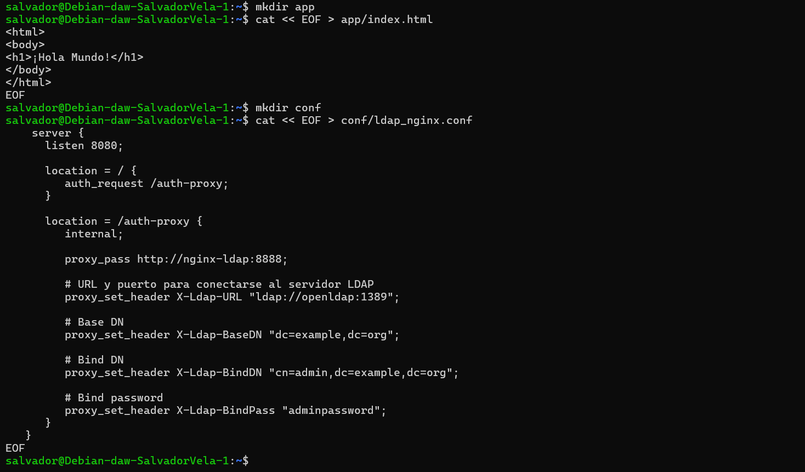
Y ahora, procedemos con el siguiente docker-compose.yml:
version: '2'
services:
nginx-ldap:
image: bitnami/nginx-ldap-auth-daemon-archived
ports:
- 8888:8888
nginx:
image: bitnami/nginx
ports:
- 8080:8080
volumes:
- ./app:/app
- ./conf/ldap_nginx.conf:/opt/bitnami/nginx/conf/server_blocks/ldap_nginx.conf
openldap:
image: bitnami/openldap
ports:
- '1389:1389'
environment:
- LDAP_ADMIN_USERNAME=admin
- LDAP_ADMIN_PASSWORD=adminpassword
- LDAP_USERS=customuser
- LDAP_PASSWORDS=custompassword
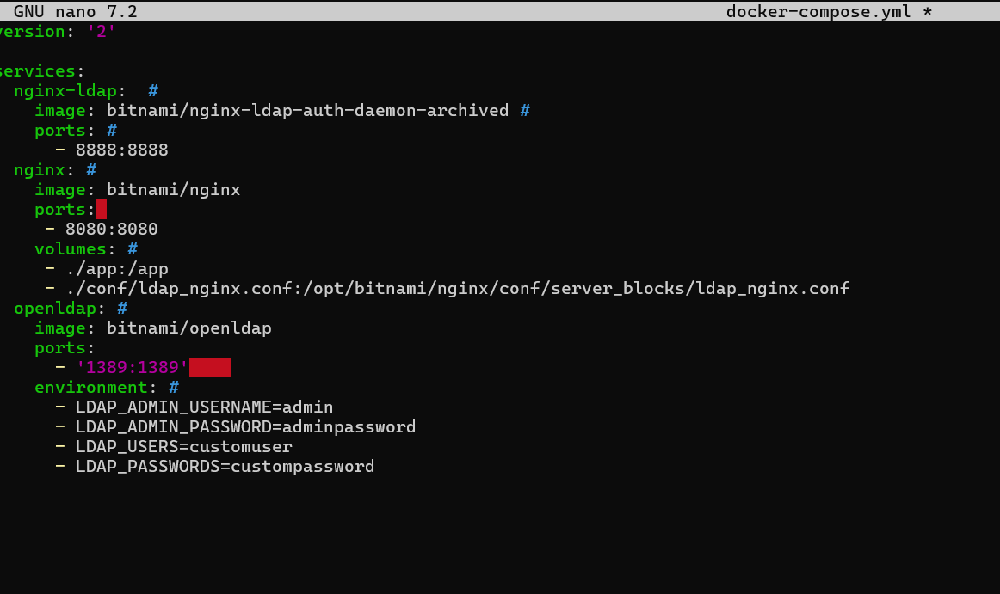
Tras esto sólo queda ejecutar compose:
docker-compose up
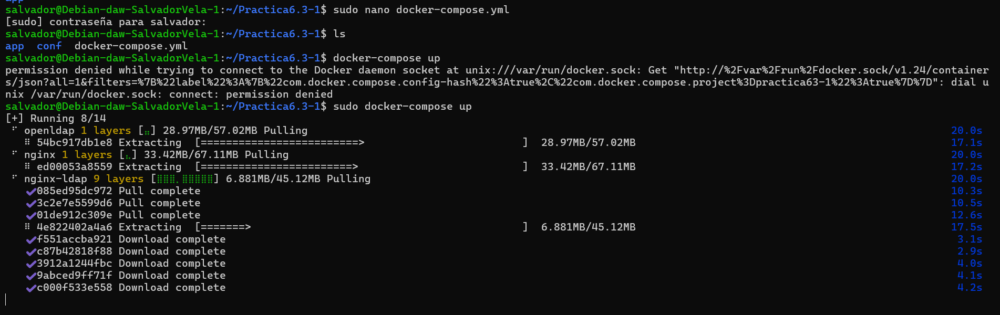
Tarea
Comprobar que puedes acceder a http://IP_Maq_Virtual:8080 y loguearte en el servidor LDAP que acabas de desplegar.
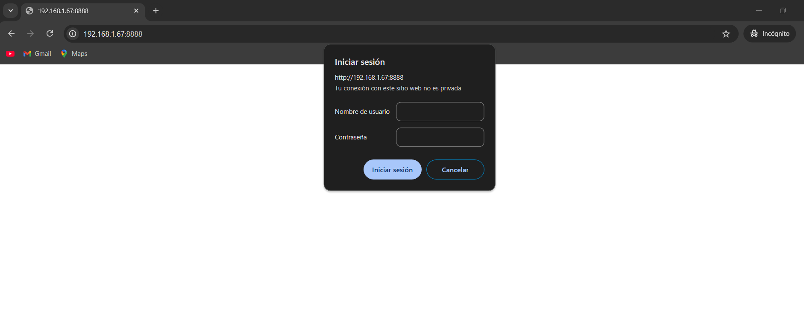
Despliegue con Docker de PHP + Apache con autenticación LDAP
Creamos un directorio que se llame Practica6.3.
En primer lugar, como es obvio, dentro del directorio creado debemos crear el index.php de nuestra aplicación:
<?php
echo 'Ey, hola usuario autenticado por LDAP!';
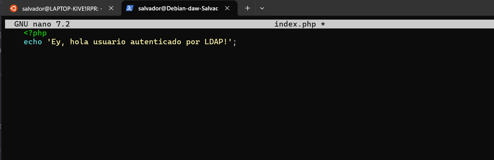
Dentro de nuestro directorio de trabajo, creado anteriormente, crearemos otro directorio llamado Docker y dentro de él, un Dockerfile (./Docker/Dockerfile).
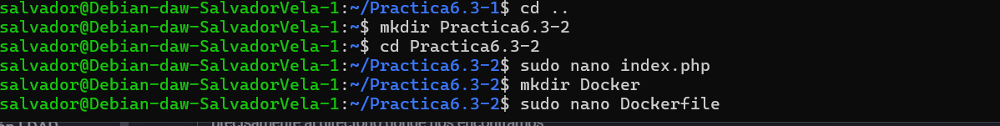
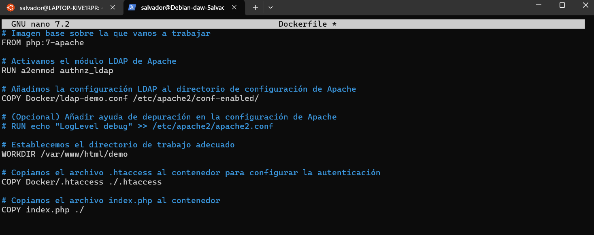
Ahora crearemos el archivo ./Docker/ldap-demo.conf, que es la configuración LDAP. Aquí establecemos los criterios de conexión con el contenedor de OpenLDAP, password y URL.
# ./Docker/ldap-demo.conf
PassEnv LDAP_BIND_ON
PassEnv LDAP_PASSWORD
PassEnv LDAP_URL
<AuthnProviderAlias ldap demo>
AuthLDAPBindDN ${LDAP_BIND_ON}
AuthLDAPBindPassword ${LDAP_PASSWORD}
AuthLDAPURL ${LDAP_URL}
</AuthnProviderAlias>
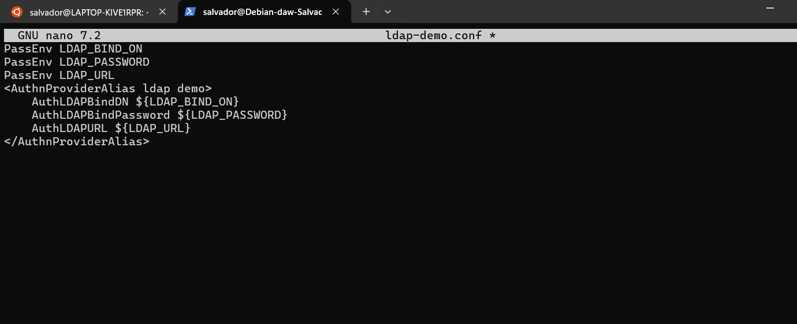
Creamos el archivo .htaccess:
# .Docker/.htaccess
AuthBasicProvider demo
AuthType Basic
AuthName "Protected Area"
Require valid-user
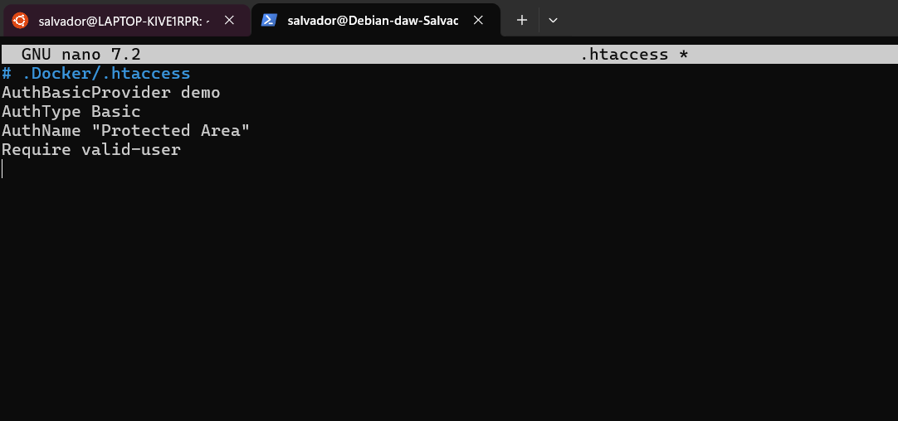
Dentro de nuestro directorio de trabajo, construimos la imagen con el siguiente comando:
docker build . \
-t docker-ldap \
-f ./Docker/dockerfile
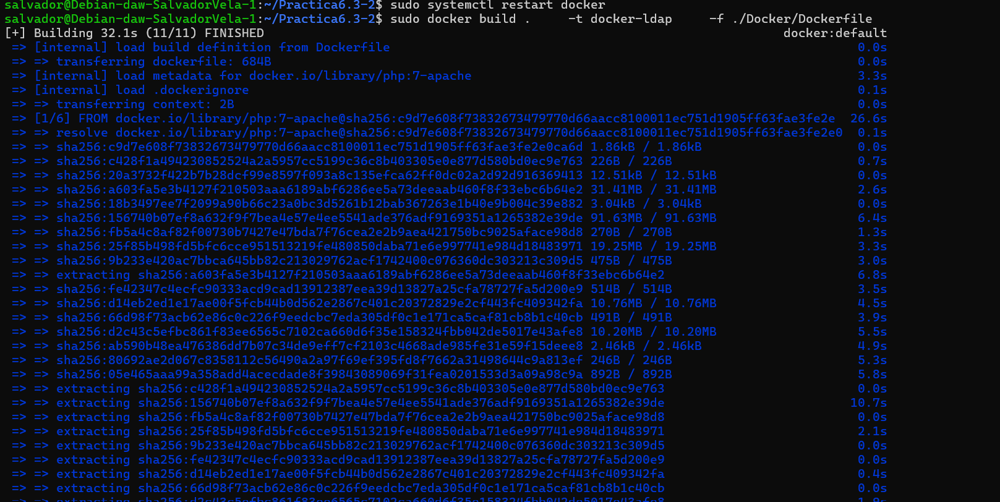
Corremos el contenedor indicando las credenciales de nuestra cuenta LDAP mediante variables de entorno con la flag -e. Para este caso, vamos a probar un servidor LDAP externo.
Utilizaremos un servidor público en Internet dedicado a pruebas: https://www.freeipa.org/page/Demo.
docker run -d \
-p 3000:80 \
--name ldap_demo \
-e LDAP_BIND_ON='uid=admin,cn=users,cn=accounts,dc=demo1,dc=freeipa,dc=org' \
-e LDAP_PASSWORD='Secret123' \
-e LDAP_URL='LDAP://ipa.demo1.freeipa.org' \
docker-ldap
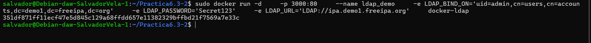